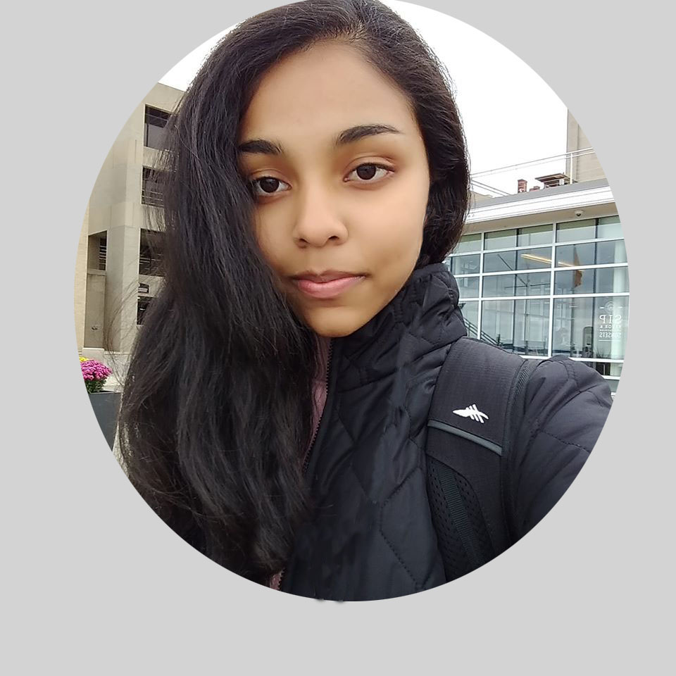

ANJALI GALI

My name is Anjali Gali and I am a
student at the
University of Wisconsin, Madison.
I am
currently my second year, majoring in Computer Science (B.S).
I was born in Salt Lake City,
Utah, and moved to Hyderabad, India, when I was eight
years old. The experience that I have
obtained has changed the way that I look at the
world and is an important part of my story.
In my free time I love to make art. I usually engage in traditional forms of media such
as
watercolor, color pencils and graphite. However, more recently, I have begun engaging
in
Photoshop, Adobe Premier, and Rhino 6. This is where I post my art, to serve as a gallery
for my work. I hope you enjoy!
The tools I use in my art include: